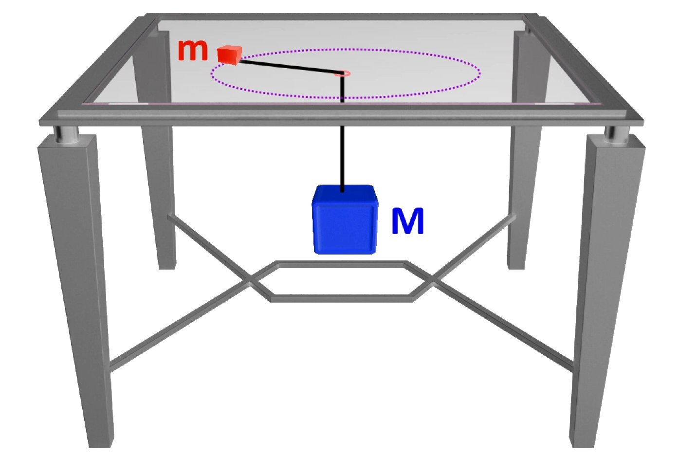
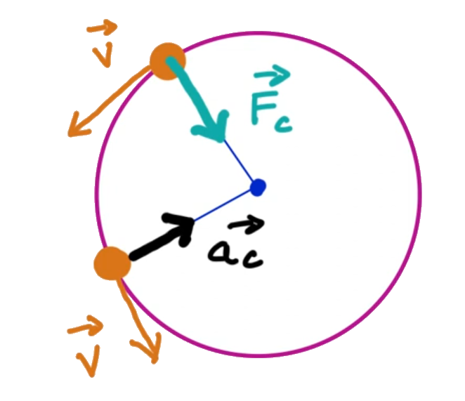
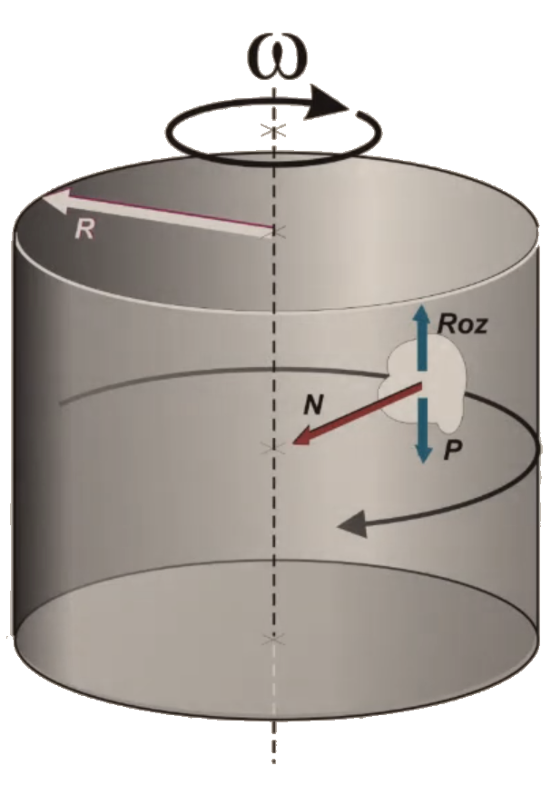
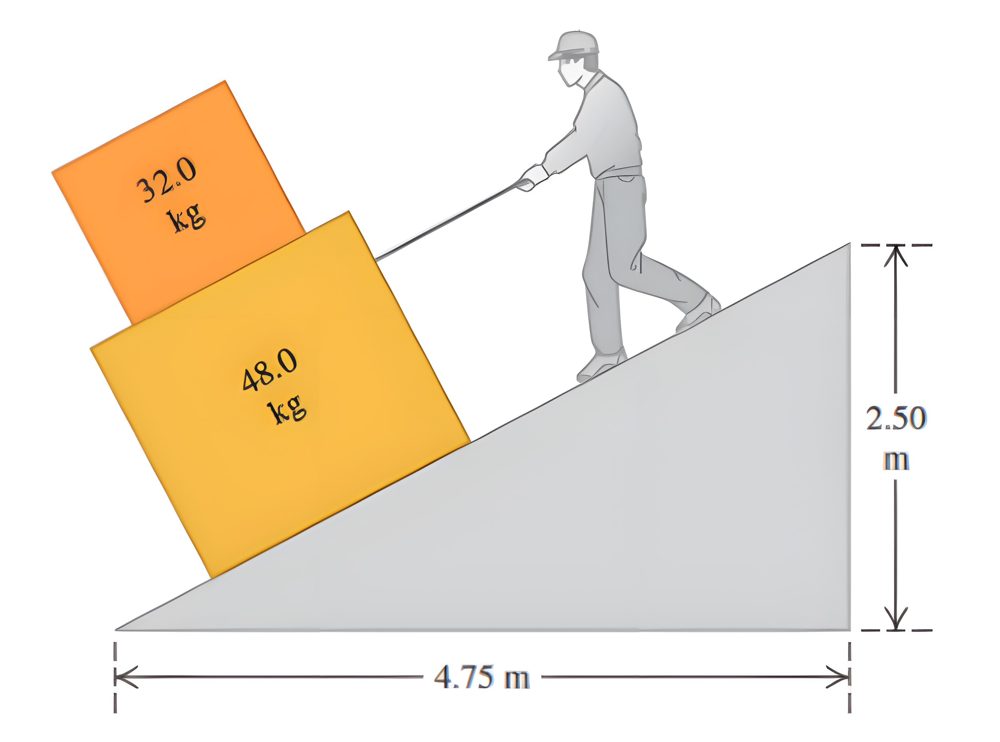
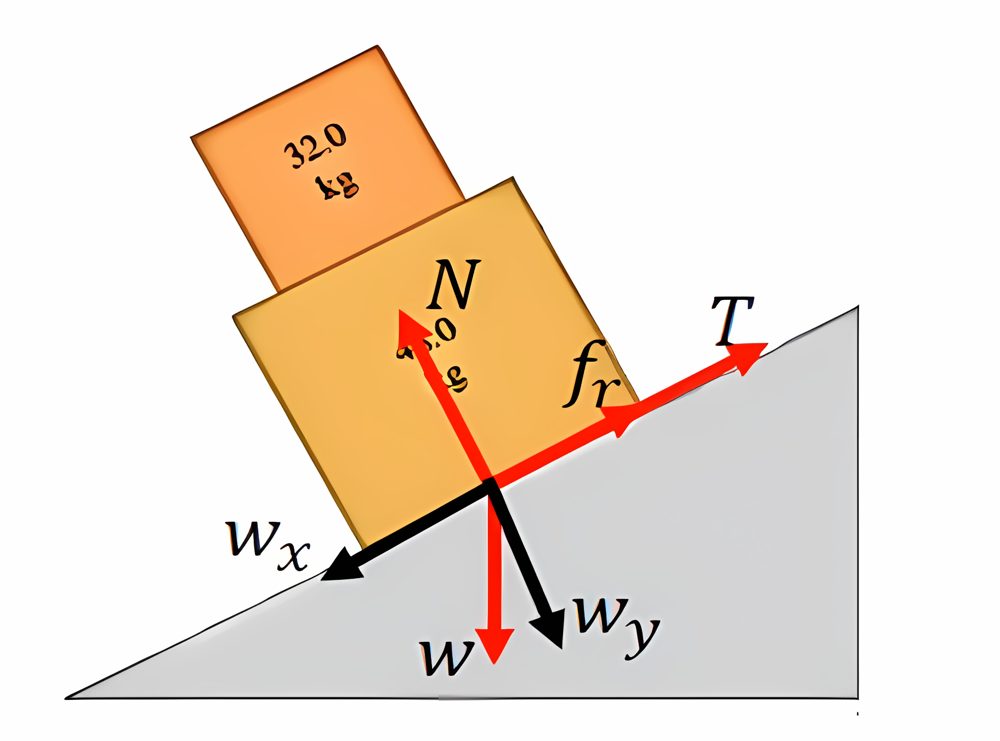
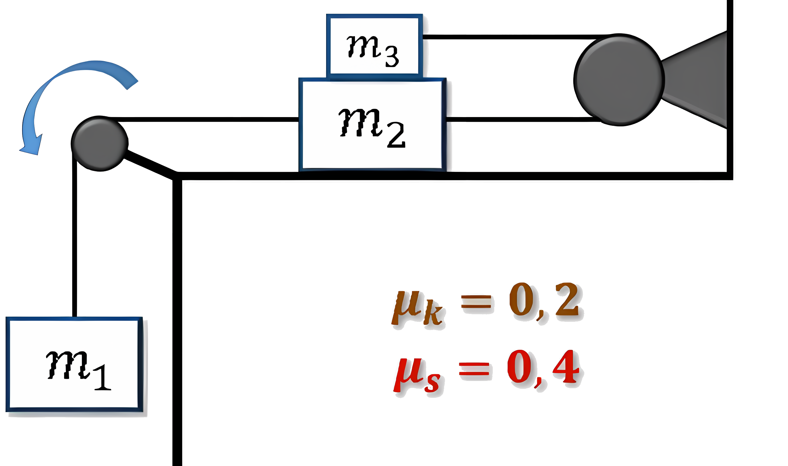
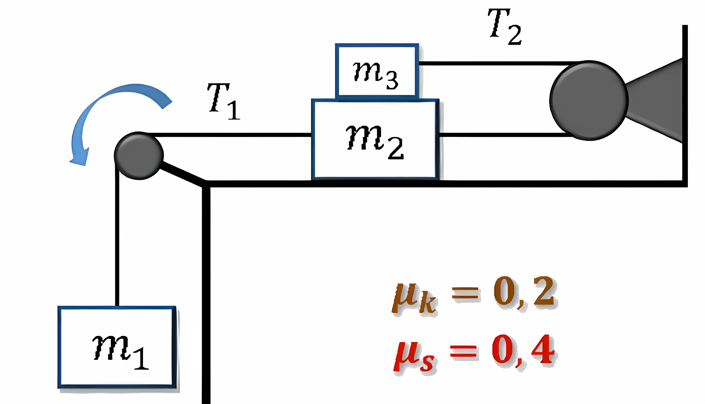
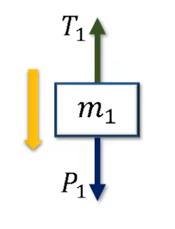
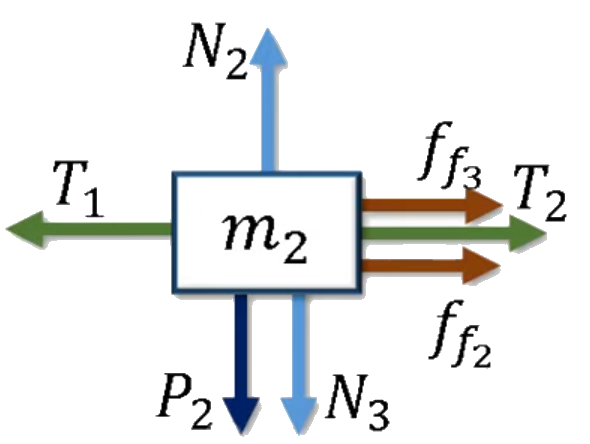
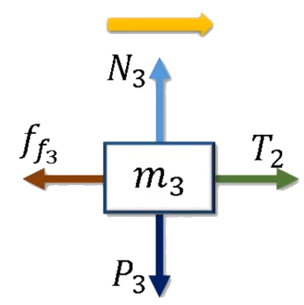

Un cuerpo m de 200 g de masa describe una circunferencia de 50 cm de radio sobre una mesa horizontal dando 2 vueltas por segundo. La masa está unida mediante una cuerda que pasa por un orificio de la mesa a otra masa, M que pende verticalmente.

F_c = m \cdot a_c = m

Consideremos la masa m y representemos sus fuerzas. La fuerza centrípeta es la que mantiene al cuerpo en movimiento circular, y está dada por la tensión de la cuerda. La fuerza de gravedad actúa hacia abajo, y la tensión actúa hacia arriba.
Hagamos la sumatoria de fuerzas en el eje y:
\sum F_y = N - P = 0 N = P N = m \cdot g
Y en el eje x (hacia el centro de la circunferencia): \sum F_x = T = m \cdot a_c
Nos piden la aceleración del cuerpo, es decir, la aceleración centrípeta.
Otra manera de sacar la aceleración centrípeta es usando la velocidad angular, que está dada por la relación entre la velocidad tangencial y el radio de la circunferencia. a_c = \frac{v^2}{r} = \omega^2 \cdot r
Nos dice que da 2 vueltas por segundo, lo que significa que la frecuencia es 2 Hz. Podemos transformar la frecuencia a radianes por segundo usando la relación: \frac{2 \pi \text{ rad}}{1 \text{ Hz}} \cdot \frac{2 \text{ Hz}}{1 \text{ s}} = 4\pi \text{ rad/s} Lo cual es precisamente la velocidad angular.
Entonces, la aceleración centrípeta es: a_c = \omega^2 \cdot r = (4\pi)^2 \cdot 0.5 = 8\pi^2 \text{ m/s}^2 a_c = 8\pi^2 \text{ m/s}^2 \approx 78.96 \text{ m/s}^2
La tensión de la cuerda es igual a la fuerza centrípeta, que es la masa por la aceleración centrípeta. La masa m está dada en gramos, así que debemos convertirla a kilogramos: m = 200 \text{ g} = 0.2 \text{ kg} T = m \cdot a_c = 0.2 \cdot 78.96 \text{ N} T = 15.79 \text{ N}
La masa M está en equilibrio, por lo que la tensión de la cuerda es igual a la fuerza de gravedad que actúa sobre ella. La fuerza de gravedad es el peso de la masa M, que está dada por: P = M \cdot g T = M \cdot g M = \frac{T}{g} = \frac{15.79}{9.81} \text{ kg} M \approx 1.61 \text{ kg}
El tambor de eje vertical de una lavadora industrial es un cilindro de 40 cm de diámetro, y la frecuencia máxima de centrifugado es de 1200 RPM. Calcular la fuerza neta a la que está sometida una masa de 2 kg de ropa ubicada en la periferia.

Primero, hagamos la sumatoria de fuerzas en el eje y, en el diagrama podemos ver que hay una fricción que actúa hacia arriba y la fuerza de gravedad que actúa hacia abajo. La fuerza centrípeta es la que mantiene al cuerpo en movimiento circular, y está dada por la fuerza normal.
\sum F_y = F_r - P = 0
Haciendo la sumatoria de fuerzas en el eje x, tenemos que la fuerza centrípeta debe ser igual a la normal: \sum F_x = N = m \cdot a_c
Dado que la normal es la fuerza centrípeta, es precisamente lo que necesitamos calcular. En teoría podriamos definir la normal en base a la suma de fuerzas en el eje y, pero eso nos deja con una incógnita.
Desarrollando el eje y: F_r = P \mu_k \cdot N = m \cdot g N = \frac{m \cdot g}{\mu_k}
Pero no tenemos la constante de fricción, así que no podemos calcular la normal directamente. Sin embargo, podemos calcular la aceleración centrípeta usando la frecuencia máxima de centrifugado.
Recordemos que hay múltiples maneras de calcular la aceleración centrípeta: a_c = \frac{v^2}{r} a_c = \omega^2 \cdot r
Esta última es la que usaremos, ya que involucra la velocidad angular, que podemos calcular a partir de la frecuencia máxima de centrifugado. La frecuencia máxima de centrifugado es de 1200 RPM, lo que significa que da 1200 revoluciones por minuto. Para convertir esto a radianes por segundo, usamos la relación: \frac{2 \pi \text{ rad}}{1 \text{ rev}} \cdot \frac{1200 \text{ rev}}{1 \text{ min}} \cdot \frac{1 \text{ min}}{60 \text{ s}} = 40\pi \text{ rad/s} Entonces, la velocidad angular es: \omega = 40\pi \text{ rad/s}
Ahora podemos calcular la aceleración centrípeta: a_c = \omega^2 \cdot r = (40\pi)^2 \cdot 0.2 = 1600\pi^2 \text{ m/s}^2 a_c \approx 3158.27 \text{ m/s}^2
Y con esto podemos calcular la fuerza centrípeta, que es la fuerza neta a la que está sometida la masa de 2 kg de ropa: F_c = m \cdot a_c = 2 \cdot 3158.27 \text{ N} F_c \approx 6316.55 \text{ N}
Usted está bajando dos cajas, una encima de la otra, por la rampa que se muestra en la figura, tirando de una cuerda paralela a la superficie de la rampa. Ambas cajas se mueven juntas a rapidez constante de 15.0 cm/s. El coeficiente de fricción cinético entre la rampa y la caja inferior es 0.44, en tanto que el coeficiente de fricción estátioa entre ambas cajas es de 0.80.

Primero, saquemos el ángulo de la rampa. Podemos usar la tangente del ángulo para calcularlo: \theta = \tan^{-1}\left(\frac{h}{d}\right) = \tan^{-1}\left(\frac{2.5}{4.75}\right) \approx 27.76^\circ
Para el bloque de color amarillo se tienen las siguientes fuerzas actuando sobre él:
\vec{T}: Tensión de la cuerda ejercida por el hombre sobre el bloque amarillo para que los bloques deciendan a velocidad constante.
\vec{N_1}: Normal que ejerce la rampa sobre el bloque amarillo.
\vec{N_2}: Normal que ejerce el bloque naranjo sobre el bloque amarillo.
m_1 \vec{g}: Peso del bloque amarillo.
\vec{f_k}: Fuerza de roce cinético entre el bloque amarillo y la rampa.

Nos piden la fuerza que debemos ejercer para que los bloques se deslicen a velocidad constante, lo que significa que la aceleración es cero. Por lo tanto, la suma de fuerzas en el eje x y en el eje y debe ser igual a cero.
Ya que ambos objetos se mueven juntos, podemos tomarlo como una sola caja de masa M = m_1 + m_2.
Descompongamos la fuerza peso en sus componentes: P = M \cdot g P_{x} = P \cdot \sin(\theta) P_{y} = P \cdot \cos(\theta)
Hagamos la sumatoria de fuerzas en el eje y: \sum F_y = N - P_{y} = 0 N_1 = P_{y} = M \cdot g \cdot \cos(\theta)
Ahora, hagamos la sumatoria de fuerzas en el eje x: \sum F_x = T + f_k - P_{x} = 0
Ya que la tensión es la fuerza que estamos buscando, podemos despejarla: T = P_{x} - f_k La fuerza de roce cinético es: f_k = \mu_k \cdot N = \mu_k \cdot M \cdot g \cdot \cos(\theta)
Sustituyendo la fuerza de roce cinético en la ecuación de la tensión: T = P_{x} - \mu_k \cdot M \cdot g \cdot \cos(\theta) Ahora, la componente del peso en el eje x es: P_{1x} = M \cdot g \cdot \sin(\theta)
Sustituyendo esto en la ecuación de la tensión: T = M \cdot g \cdot \sin(\theta) - \mu_k \cdot M \cdot g \cdot \cos(\theta) Factorizando: T = M \cdot g \cdot (\sin(\theta) - \mu_k \cdot \cos(\theta)) Reemplazando los valores: T = (m_1 + m_2) \cdot g \cdot (\sin(\theta) - \mu_k \cdot \cos(\theta)) T = (32 + 48) \cdot 9.81 \cdot (\sin(27.76^\circ) - 0.44 \cdot \cos(27.76^\circ))
Calculando: T = 80 \cdot 9.81 \cdot (0.469 - 0.44 \cdot 0.848) T = 59.97 \text{ N}
Para calcular esto, podemos imaginar que la caja inferior es un plano inclinado. La masa superior tiende a moverse hacia la izquierda por la inclinación de la caja inferior, pero la fricción estática entre ambas cajas se opone a este movimiento.
Hacemos la sumatoria de fuerzas en el eje x: \sum F_{x} = -P_{2x}+f_{s} = 0 f_{s} = P_{2x} = m_2 \cdot g \cdot \sin(\theta) Reemplazando: f_{s} = 32 \cdot 9.81 \cdot \sin(27.76^\circ) f_{s} = 32 \cdot 9.81 \cdot 0.469 f_{s} = 146.21 \text{ N}
El coeficiente de fricción cinética y estática entre todas las superficies son: 0,2 y 0,4 respectivamente. Las poleas no tienen fricción y las masas se liberan a partir del reposo Determine: la aceleración del sistema y las tensiones en las cuerdas.
m_1 = 15 \text{ kg} \quad m_2 = 3 \text{ kg} \quad m_3 = 2 \text{ kg}

Primero identifiquemos las tensiones:

Realizemos la sumatoria de fuerzas en el eje y para cada masa:

\sum F_{y1} = -T_1 + m_1 \cdot g = m_1 \cdot a

\sum F_{y2} = N_2 - P_{2} - N_3 = 0 \sum F_{x2} = T_1 - T_2 - f_{s2} - f_{s3} = m_2 \cdot a

\sum F_{y3} = N_3 - P_{3} = 0 \sum F_{x3} = T_2 - f_{s3} = m_3 \cdot a
La forma más sencilla de resolver este sistema es despejando las aceleraciones de cada masa en función de las tensiones y las fuerzas de fricción.
a = -\frac{T_1 }{m_1} + g
a = \frac{T_1 - T_2 - f_{s2} - f_{s3}}{m_2}
a = \frac{T_2 - f_{s3}}{m_3}
Podemos reemplazas los valores que tenemos:
a = - \frac{T_1}{15} + 9.81
a = \frac{T_1 - T_2 - 0.2 \cdot N_2 - 0.2 \cdot N_3}{3} La normal N_2 es igual al peso de la masa m_2, la normal N_3 es igual al peso de la masa m_3: a = \frac{T_1 - T_2 - 0.2 \cdot 3 \cdot 9.81 - 0.2 \cdot 2 \cdot 9.81}{3} a = \frac{T_1 - T_2}{3} - 3.26
a = \frac{T_2 - 0.2 \cdot N_3}{2} La normal N_3 es igual al peso de la masa m_3: a = \frac{T_2 - 0.2 \cdot 2 \cdot 9.81}{2} a = \frac{T_2}{2} - 1.96
Ahora tenemos un sistema de ecuaciones con tres incógnitas: T_1, T_2 y a.
(1) \quad a = -\frac{T_1}{15} + 9.81 (2) \quad a = \frac{T_1 - T_2}{3} - 3.26 (3) \quad a = \frac{T_2}{2} - 1.96 Podemos igualar las ecuaciones (1) y (2): - \frac{T_1}{15} + 9.81 = \frac{T_1 }{3} - \frac{T_2}{3} - 3.26 Multiplicamos todo por 15 para eliminar el denominador: - T_1 + 147.15 = 5T_1 - 5T_2 - 48.9
Reorganizando: 6T_1 - 5T_2 = 196.05 Ahora, igualamos las ecuaciones (2) y (3): \frac{T_1 - T_2}{3} - 3.26 = \frac{T_2}{2} - 1.96 Multiplicamos todo por 6 para eliminar los denominadores: 2T_1 - 2T_2 - 19.56 = 3T_2 - 11.76
Reorganizando: 2T_1 - 5T_2 = 7.8
Ahora tenemos un sistema de dos ecuaciones con dos incógnitas: (4) \quad 6T_1 - 5T_2 = 196.05 (5) \quad 2T_1 - 5T_2 = 7.8 Podemos resolver este sistema por eliminación. Restamos la ecuación (5) de la ecuación (4): (6) \quad 4T_1 = 188.25 T_1 = 47.06 \text{ N} Ahora sustituimos T_1 en la ecuación (5): 2(47.06) - 5T_2 = 7.8 94.12 - 5T_2 = 7.8 5T_2 = 86.32 T_2 = 17.26 \text{ N}
Ahora podemos sustituir T_1 en la ecuación (1) para encontrar la aceleración: a = -\frac{47.06}{15} + 9.81 a = -3.14 + 9.81 a = 6.67 \text{ m/s}^2